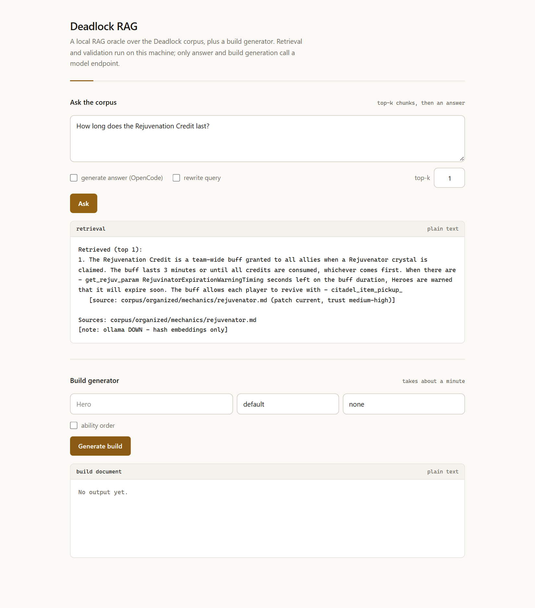

Retrieval · 83 questions
0.972 recall@569 of 71 answerable questions retrieved a relevant chunk in the top five.
Engineering case study · local retrieval, checked output
A local RAG oracle grounds Deadlock build generation in a curated knowledge base. A hosted model proposes the plan; local code resolves it, encodes it, decodes it, and validates it before a build code can leave the process.
Independent fan project. Not affiliated with Valve or Deadlock.
Approach
The hard problem was not getting a model to suggest a build. It was preventing plausible-looking text from becoming an invalid import code.
Local evidence
563 curated Markdown documents become 3,101 chunks, ranked with BM25, cosine similarity, and MMR. Scope and token-coverage checks let the oracle decline an unsupported answer instead of filling gaps from model memory.
Hosted planning · local checks
The model receives retrieved evidence and legal item candidates, then returns a plan. Local code resolves every item name to game data and stops on unknown names before encoding.
Measured results
The scores measure retrieval and deterministic build checks—not whether a model's strategic advice wins a match.
69 of 71 answerable questions retrieved a relevant chunk in the top five.
12 of 12 questions that should be declined were correctly abstained on.
12 of 12 generated builds scored 1.000 and passed code, ID, and template checks.
Measured against a hosted chat model; a build is returned only after encode, decode, and validation succeed.
The held-out retrieval split has only five questions: 3 answerable and 2 expected abstentions. It returned 3/3 recall and 2/2 abstention; treat it as a small sanity check, not a reliable estimate of general performance.
Python 3.13 · BM25 · cosine similarity · MMR · zstd / protobuf codec · unittest · GitHub Actions
In the tool
The dependency-free web UI exposes the corpus query and build generator. Retrieval evidence and the generated build document remain visible alongside the controls.
